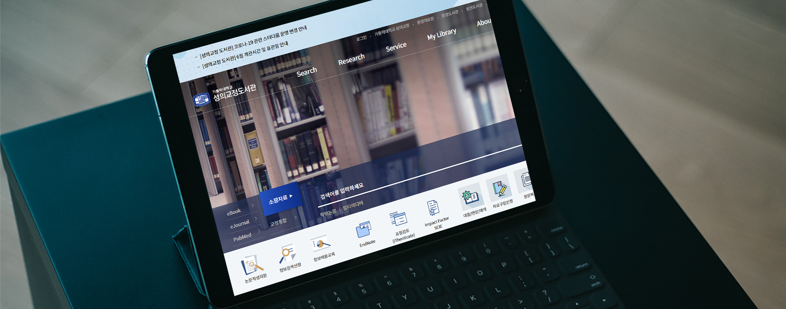

- 가톨릭 대학교 성의교정 도서관 메인, 서브페이지
최초로 경험한 실무 프로젝트입니다. 스토리보드와 스타일가이드를 기반으로 메인페이지와 서브페이지를 제작하였습니다. 라이브러리없이 순수 하드코딩으로 작업하였으며, 실제로 서비스중인 사이트입니다. 많은 분량의 서브페이지 작업과 상황별 이슈해결, 디자이너 및 개발자와의 협업 등 다양한 경험을 할 수 있었던 프로젝트였습니다.
-
- Date
- 2020. 07
-
- Role
- Publishing 100%
-
- Viewport
- Responsive
-
- Cross Browsing
- Edge, Ie9+, Chrome, Firefox, Opera